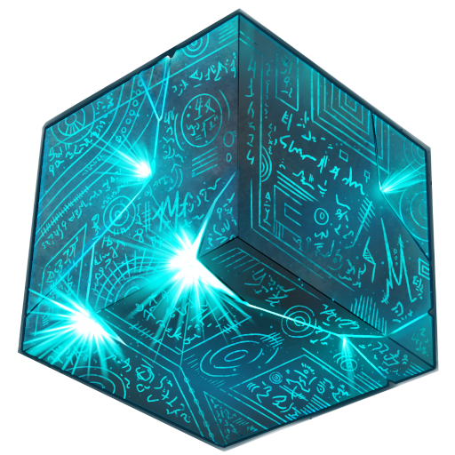

 ManaCube Events Team
When I was 15 I started volunteering for the events team of ManaCube. Two teammates and I were appointed as Event Coordinators and, since the team had just been restructured, we were given fairly free rein to help wherever we felt comfortable. I spent most of my free time working to improve the in-game experience and, after 8 months, I was promoted to the brand-new position of Event Manager.I spent just over 2 years as the server's Event Manager. During my time in the role, I:
- learnt to program Minecraft plugins in Java using the PaperMC API;
- lead event development projects;
- designed and held training sessions for new team members;
- fixed issues that arose during live events, both technical bugs and players' problems;
- and ensured that our two weekly events ran smoothly every time.